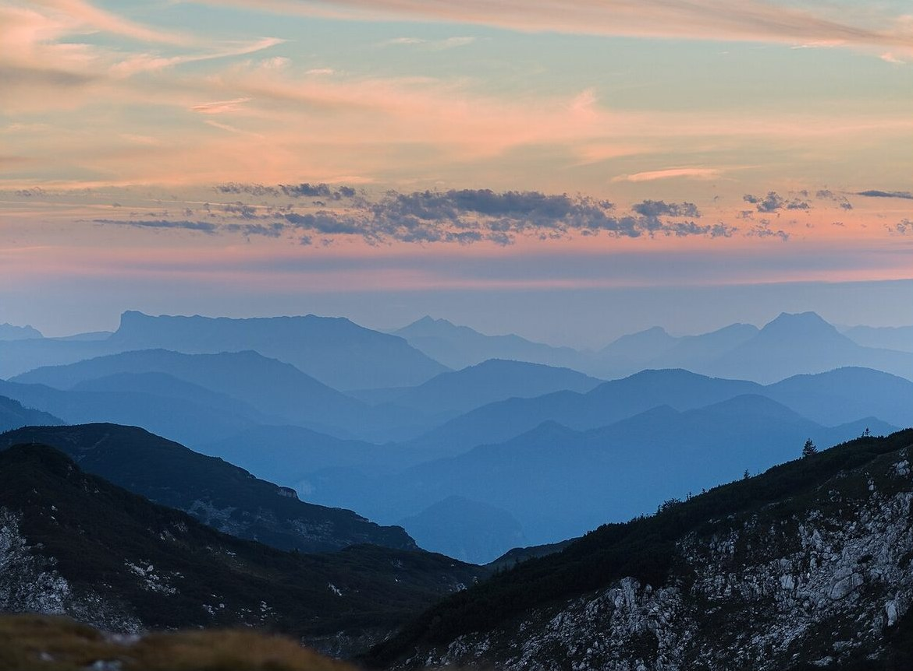

アクセス
| 住所 | 富山県砺波市宮丸573-1 |
|---|---|
| 電話 | 0763-23-5288 |
| 営業時間 | 準備中(お問い合わせください) |
| 定休日 | 準備中(お問い合わせください) |
| 駐車場 | 準備中(お問い合わせください) |
場所や駐車場について、ご不明な点はお電話でお問い合わせください。

| 住所 | 富山県砺波市宮丸573-1 |
|---|---|
| 電話 | 0763-23-5288 |
| 営業時間 | 準備中(お問い合わせください) |
| 定休日 | 準備中(お問い合わせください) |
| 駐車場 | 準備中(お問い合わせください) |
場所や駐車場について、ご不明な点はお電話でお問い合わせください。

掲載写真はフリー素材のイメージ写真です。店舗の実際の様子・施術例ではありません。撮影地は富山県外の地域や、撮影地が不明なものを含みます。